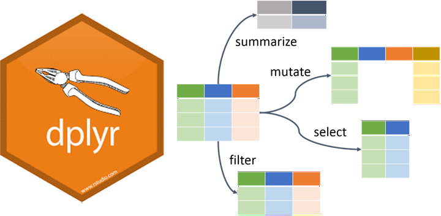

.
Overview
R objects
R packages
Reading data in R
Basic data wrangling

Illustration adopted from Allison Horst
R Objects
You can consider R objects as saving information
e.g., text, number, matrix, vectro, dataframe
In another words everything in R is an object

R objects
- Objects in R are assigned a value using →
R packages
Importing data
SPSS, Stata, SAS files: haven package
Excel files: readxl package
CSV files: readr package
Importing data into R
SPSS, Stata & SAS using haven package

Importing data into R
Excel files using readxl package
# A tibble: 32 × 11
mpg cyl disp hp drat wt qsec vs am gear carb
<dbl> <dbl> <dbl> <dbl> <dbl> <dbl> <dbl> <dbl> <dbl> <dbl> <dbl>
1 21 6 160 110 3.9 2.62 16.5 0 1 4 4
2 21 6 160 110 3.9 2.88 17.0 0 1 4 4
3 22.8 4 108 93 3.85 2.32 18.6 1 1 4 1
4 21.4 6 258 110 3.08 3.22 19.4 1 0 3 1
5 18.7 8 360 175 3.15 3.44 17.0 0 0 3 2
6 18.1 6 225 105 2.76 3.46 20.2 1 0 3 1
7 14.3 8 360 245 3.21 3.57 15.8 0 0 3 4
8 24.4 4 147. 62 3.69 3.19 20 1 0 4 2
9 22.8 4 141. 95 3.92 3.15 22.9 1 0 4 2
10 19.2 6 168. 123 3.92 3.44 18.3 1 0 4 4
# ℹ 22 more rows
Importing data into R
CSV files using readr package

Basic data wrangling with Tidyverse

What is tidyverse?
A collection of R packages designed for data science.
All packages share an underlying philosophy, grammar, and data structure.


Illustration adopted from Allison Horst

Illustration adopted from Allison Horst
Tidy data makes it easier for reproducibility and reuse

Illustration adopted from Allison Horst
Yehey! Tidy Data for the win!

Illustration adopted from Allison Horst
Data wrangling using dplyr

Illustration adopted from Allison Horst
dplyr
Overview
select()picks variables based on their namesmutate()adds new variablesfilter()picks cases based on their valuessummarise()reduces multiple values down to a single summaryarrange()change the ordering of the rows

select()
data
# A tibble: 1,704 × 6
country continent year lifeExp pop gdpPercap
<fct> <fct> <int> <dbl> <int> <dbl>
1 Afghanistan Asia 1952 28.8 8425333 779.
2 Afghanistan Asia 1957 30.3 9240934 821.
3 Afghanistan Asia 1962 32.0 10267083 853.
4 Afghanistan Asia 1967 34.0 11537966 836.
5 Afghanistan Asia 1972 36.1 13079460 740.
6 Afghanistan Asia 1977 38.4 14880372 786.
7 Afghanistan Asia 1982 39.9 12881816 978.
8 Afghanistan Asia 1987 40.8 13867957 852.
9 Afghanistan Asia 1992 41.7 16317921 649.
10 Afghanistan Asia 1997 41.8 22227415 635.
# ℹ 1,694 more rowsselect(data, continent, country, pop)
# A tibble: 1,704 × 3
continent country pop
<fct> <fct> <int>
1 Asia Afghanistan 8425333
2 Asia Afghanistan 9240934
3 Asia Afghanistan 10267083
4 Asia Afghanistan 11537966
5 Asia Afghanistan 13079460
6 Asia Afghanistan 14880372
7 Asia Afghanistan 12881816
8 Asia Afghanistan 13867957
9 Asia Afghanistan 16317921
10 Asia Afghanistan 22227415
# ℹ 1,694 more rowsselect()
We can also remove variables with a - (minus)
data
# A tibble: 1,704 × 6
country continent year lifeExp pop gdpPercap
<fct> <fct> <int> <dbl> <int> <dbl>
1 Afghanistan Asia 1952 28.8 8425333 779.
2 Afghanistan Asia 1957 30.3 9240934 821.
3 Afghanistan Asia 1962 32.0 10267083 853.
4 Afghanistan Asia 1967 34.0 11537966 836.
5 Afghanistan Asia 1972 36.1 13079460 740.
6 Afghanistan Asia 1977 38.4 14880372 786.
7 Afghanistan Asia 1982 39.9 12881816 978.
8 Afghanistan Asia 1987 40.8 13867957 852.
9 Afghanistan Asia 1992 41.7 16317921 649.
10 Afghanistan Asia 1997 41.8 22227415 635.
# ℹ 1,694 more rowsselect(data, -year, -pop)
# A tibble: 1,704 × 4
country continent lifeExp gdpPercap
<fct> <fct> <dbl> <dbl>
1 Afghanistan Asia 28.8 779.
2 Afghanistan Asia 30.3 821.
3 Afghanistan Asia 32.0 853.
4 Afghanistan Asia 34.0 836.
5 Afghanistan Asia 36.1 740.
6 Afghanistan Asia 38.4 786.
7 Afghanistan Asia 39.9 978.
8 Afghanistan Asia 40.8 852.
9 Afghanistan Asia 41.7 649.
10 Afghanistan Asia 41.8 635.
# ℹ 1,694 more rowsselect()
Selection helpers
These selection helpers match variables according to a given pattern.
starts_with()starts with a prefixends_with()ends with a suffixcontains()contains a literal stringmatches()matches regular expression
filter()
data
# A tibble: 1,704 × 6
country continent year lifeExp pop gdpPercap
<fct> <fct> <int> <dbl> <int> <dbl>
1 Afghanistan Asia 1952 28.8 8425333 779.
2 Afghanistan Asia 1957 30.3 9240934 821.
3 Afghanistan Asia 1962 32.0 10267083 853.
4 Afghanistan Asia 1967 34.0 11537966 836.
5 Afghanistan Asia 1972 36.1 13079460 740.
6 Afghanistan Asia 1977 38.4 14880372 786.
7 Afghanistan Asia 1982 39.9 12881816 978.
8 Afghanistan Asia 1987 40.8 13867957 852.
9 Afghanistan Asia 1992 41.7 16317921 649.
10 Afghanistan Asia 1997 41.8 22227415 635.
# ℹ 1,694 more rowsfilter(data, country == "Philippines")
# A tibble: 12 × 6
country continent year lifeExp pop gdpPercap
<fct> <fct> <int> <dbl> <int> <dbl>
1 Philippines Asia 1952 47.8 22438691 1273.
2 Philippines Asia 1957 51.3 26072194 1548.
3 Philippines Asia 1962 54.8 30325264 1650.
4 Philippines Asia 1967 56.4 35356600 1814.
5 Philippines Asia 1972 58.1 40850141 1989.
6 Philippines Asia 1977 60.1 46850962 2373.
7 Philippines Asia 1982 62.1 53456774 2603.
8 Philippines Asia 1987 64.2 60017788 2190.
9 Philippines Asia 1992 66.5 67185766 2279.
10 Philippines Asia 1997 68.6 75012988 2537.
11 Philippines Asia 2002 70.3 82995088 2651.
12 Philippines Asia 2007 71.7 91077287 3190.mutate()
The mutate function will take a statement similar to this:
variable_name=do_some_calculationvariable_namewill be attached at the end of the dataset.
mutate()
Let’s calculate the gdp
data
# A tibble: 1,704 × 6
country continent year lifeExp pop gdpPercap
<fct> <fct> <int> <dbl> <int> <dbl>
1 Afghanistan Asia 1952 28.8 8425333 779.
2 Afghanistan Asia 1957 30.3 9240934 821.
3 Afghanistan Asia 1962 32.0 10267083 853.
4 Afghanistan Asia 1967 34.0 11537966 836.
5 Afghanistan Asia 1972 36.1 13079460 740.
6 Afghanistan Asia 1977 38.4 14880372 786.
7 Afghanistan Asia 1982 39.9 12881816 978.
8 Afghanistan Asia 1987 40.8 13867957 852.
9 Afghanistan Asia 1992 41.7 16317921 649.
10 Afghanistan Asia 1997 41.8 22227415 635.
# ℹ 1,694 more rowsmutate(data, GDP = gdpPercap * pop)
# A tibble: 1,704 × 7
country continent year lifeExp pop gdpPercap GDP
<fct> <fct> <int> <dbl> <int> <dbl> <dbl>
1 Afghanistan Asia 1952 28.8 8425333 779. 6567086330.
2 Afghanistan Asia 1957 30.3 9240934 821. 7585448670.
3 Afghanistan Asia 1962 32.0 10267083 853. 8758855797.
4 Afghanistan Asia 1967 34.0 11537966 836. 9648014150.
5 Afghanistan Asia 1972 36.1 13079460 740. 9678553274.
6 Afghanistan Asia 1977 38.4 14880372 786. 11697659231.
7 Afghanistan Asia 1982 39.9 12881816 978. 12598563401.
8 Afghanistan Asia 1987 40.8 13867957 852. 11820990309.
9 Afghanistan Asia 1992 41.7 16317921 649. 10595901589.
10 Afghanistan Asia 1997 41.8 22227415 635. 14121995875.
# ℹ 1,694 more rowsrename()
Changes the variable name while keeping all else intact.
new_variable_name=old_variable_name
data
# A tibble: 1,704 × 6
country continent year lifeExp pop gdpPercap
<fct> <fct> <int> <dbl> <int> <dbl>
1 Afghanistan Asia 1952 28.8 8425333 779.
2 Afghanistan Asia 1957 30.3 9240934 821.
3 Afghanistan Asia 1962 32.0 10267083 853.
4 Afghanistan Asia 1967 34.0 11537966 836.
5 Afghanistan Asia 1972 36.1 13079460 740.
6 Afghanistan Asia 1977 38.4 14880372 786.
7 Afghanistan Asia 1982 39.9 12881816 978.
8 Afghanistan Asia 1987 40.8 13867957 852.
9 Afghanistan Asia 1992 41.7 16317921 649.
10 Afghanistan Asia 1997 41.8 22227415 635.
# ℹ 1,694 more rowsrename(data, population = pop)
# A tibble: 1,704 × 6
country continent year lifeExp population gdpPercap
<fct> <fct> <int> <dbl> <int> <dbl>
1 Afghanistan Asia 1952 28.8 8425333 779.
2 Afghanistan Asia 1957 30.3 9240934 821.
3 Afghanistan Asia 1962 32.0 10267083 853.
4 Afghanistan Asia 1967 34.0 11537966 836.
5 Afghanistan Asia 1972 36.1 13079460 740.
6 Afghanistan Asia 1977 38.4 14880372 786.
7 Afghanistan Asia 1982 39.9 12881816 978.
8 Afghanistan Asia 1987 40.8 13867957 852.
9 Afghanistan Asia 1992 41.7 16317921 649.
10 Afghanistan Asia 1997 41.8 22227415 635.
# ℹ 1,694 more rowsarrange()
You can order data by variable to show the highest or lowest values first.
consider lifeExp default is lowest first
data
# A tibble: 1,704 × 6
country continent year lifeExp pop gdpPercap
<fct> <fct> <int> <dbl> <int> <dbl>
1 Afghanistan Asia 1952 28.8 8425333 779.
2 Afghanistan Asia 1957 30.3 9240934 821.
3 Afghanistan Asia 1962 32.0 10267083 853.
4 Afghanistan Asia 1967 34.0 11537966 836.
5 Afghanistan Asia 1972 36.1 13079460 740.
6 Afghanistan Asia 1977 38.4 14880372 786.
7 Afghanistan Asia 1982 39.9 12881816 978.
8 Afghanistan Asia 1987 40.8 13867957 852.
9 Afghanistan Asia 1992 41.7 16317921 649.
10 Afghanistan Asia 1997 41.8 22227415 635.
# ℹ 1,694 more rowsdesc() sort lifeExp from highest to lowest
arrange(data, desc(lifeExp))
# A tibble: 1,704 × 6
country continent year lifeExp pop gdpPercap
<fct> <fct> <int> <dbl> <int> <dbl>
1 Japan Asia 2007 82.6 127467972 31656.
2 Hong Kong, China Asia 2007 82.2 6980412 39725.
3 Japan Asia 2002 82 127065841 28605.
4 Iceland Europe 2007 81.8 301931 36181.
5 Switzerland Europe 2007 81.7 7554661 37506.
6 Hong Kong, China Asia 2002 81.5 6762476 30209.
7 Australia Oceania 2007 81.2 20434176 34435.
8 Spain Europe 2007 80.9 40448191 28821.
9 Sweden Europe 2007 80.9 9031088 33860.
10 Israel Asia 2007 80.7 6426679 25523.
# ℹ 1,694 more rowsgroup_by and summarise()
Use when you want to aggregate your data (by groups).
Sometimes we want to calculate group statistics.

group_by and summarise()
Suppose we want to know the average population by continent.
data
# A tibble: 1,704 × 6
country continent year lifeExp pop gdpPercap
<fct> <fct> <int> <dbl> <int> <dbl>
1 Afghanistan Asia 1952 28.8 8425333 779.
2 Afghanistan Asia 1957 30.3 9240934 821.
3 Afghanistan Asia 1962 32.0 10267083 853.
4 Afghanistan Asia 1967 34.0 11537966 836.
5 Afghanistan Asia 1972 36.1 13079460 740.
6 Afghanistan Asia 1977 38.4 14880372 786.
7 Afghanistan Asia 1982 39.9 12881816 978.
8 Afghanistan Asia 1987 40.8 13867957 852.
9 Afghanistan Asia 1992 41.7 16317921 649.
10 Afghanistan Asia 1997 41.8 22227415 635.
# ℹ 1,694 more rowsgroup_by and summarise()
Suppose we want to know the average population by continent.
data
# A tibble: 1,704 × 6
country continent year lifeExp pop gdpPercap
<fct> <fct> <int> <dbl> <int> <dbl>
1 Afghanistan Asia 1952 28.8 8425333 779.
2 Afghanistan Asia 1957 30.3 9240934 821.
3 Afghanistan Asia 1962 32.0 10267083 853.
4 Afghanistan Asia 1967 34.0 11537966 836.
5 Afghanistan Asia 1972 36.1 13079460 740.
6 Afghanistan Asia 1977 38.4 14880372 786.
7 Afghanistan Asia 1982 39.9 12881816 978.
8 Afghanistan Asia 1987 40.8 13867957 852.
9 Afghanistan Asia 1992 41.7 16317921 649.
10 Afghanistan Asia 1997 41.8 22227415 635.
# ℹ 1,694 more rowsgrouped_by_continent <- group_by(data, continent)
summarised_data <- summarise(grouped_by_continent, avg_pop = mean(pop))
arrange(summarised_data, desc(avg_pop))
# A tibble: 5 × 2
continent avg_pop
<fct> <dbl>
1 Asia 77038722.
2 Americas 24504795.
3 Europe 17169765.
4 Africa 9916003.
5 Oceania 8874672.Too many codes!
It’s hard to follow!
It’s hard to keep track of the codes!

%>% pipe operator
The%>%operator
The %>% helps your write code in a way that is easier to read and understand.
grouped_by_continent <- group_by(data, continent)
summarised_data <- summarise(grouped_by_continent, avg_pop = mean(pop))
arrange(summarised_data, desc(avg_pop))
# A tibble: 5 × 2
continent avg_pop
<fct> <dbl>
1 Asia 77038722.
2 Americas 24504795.
3 Europe 17169765.
4 Africa 9916003.
5 Oceania 8874672.The%>%operator
What is the average life expectancy of Asian countries per year?
filtered_by_asia <- filter(data, continent == "Asia")
grouped_by_country_year <- group_by(filtered_by_asia, country, year)
summarise(grouped_by_country_year, avg_lifeExp = mean(lifeExp))
# A tibble: 396 × 3
# Groups: country [33]
country year avg_lifeExp
<fct> <int> <dbl>
1 Afghanistan 1952 28.8
2 Afghanistan 1957 30.3
3 Afghanistan 1962 32.0
4 Afghanistan 1967 34.0
5 Afghanistan 1972 36.1
6 Afghanistan 1977 38.4
7 Afghanistan 1982 39.9
8 Afghanistan 1987 40.8
9 Afghanistan 1992 41.7
10 Afghanistan 1997 41.8
# ℹ 386 more rowsdata %>%
filter(continent == "Asia") %>%
group_by(country, year) %>%
summarise(avg_lifeExp = mean(lifeExp))
# A tibble: 396 × 3
# Groups: country [33]
country year avg_lifeExp
<fct> <int> <dbl>
1 Afghanistan 1952 28.8
2 Afghanistan 1957 30.3
3 Afghanistan 1962 32.0
4 Afghanistan 1967 34.0
5 Afghanistan 1972 36.1
6 Afghanistan 1977 38.4
7 Afghanistan 1982 39.9
8 Afghanistan 1987 40.8
9 Afghanistan 1992 41.7
10 Afghanistan 1997 41.8
# ℹ 386 more rowsThe %>% operator
filtered_by_asia <- filter(data, continent == "Asia")
grouped_by_country <- group_by(filtered_by_asia, country)
summarised_by_country <- summarise(grouped_by_country, avg_lifeExp = mean(lifeExp))
arrange(summarised_by_country, desc(avg_lifeExp))
# A tibble: 33 × 2
country avg_lifeExp
<fct> <dbl>
1 Japan 74.8
2 Israel 73.6
3 Hong Kong, China 73.5
4 Singapore 71.2
5 Taiwan 70.3
6 Kuwait 68.9
7 Sri Lanka 66.5
8 Lebanon 65.9
9 Bahrain 65.6
10 Korea, Rep. 65.0
# ℹ 23 more rowsdata %>%
filter(continent == "Asia") %>%
group_by(country) %>%
summarise(avg_lifeExp = mean(lifeExp)) %>%
arrange(desc(avg_lifeExp))
# A tibble: 33 × 2
country avg_lifeExp
<fct> <dbl>
1 Japan 74.8
2 Israel 73.6
3 Hong Kong, China 73.5
4 Singapore 71.2
5 Taiwan 70.3
6 Kuwait 68.9
7 Sri Lanka 66.5
8 Lebanon 65.9
9 Bahrain 65.6
10 Korea, Rep. 65.0
# ℹ 23 more rowsLet’s practice

Training-workshop on evidence-based impact assessment | 12-14 August 2025